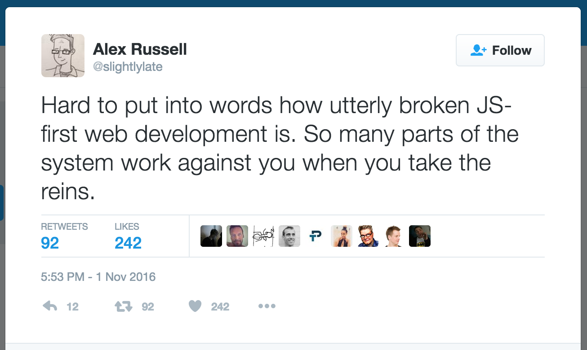
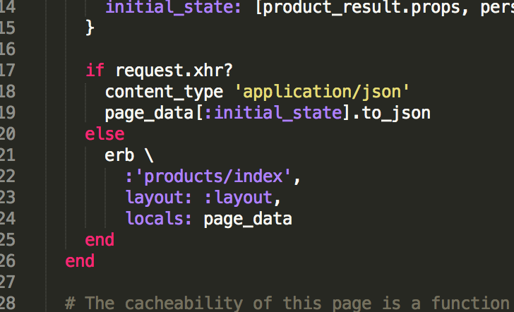
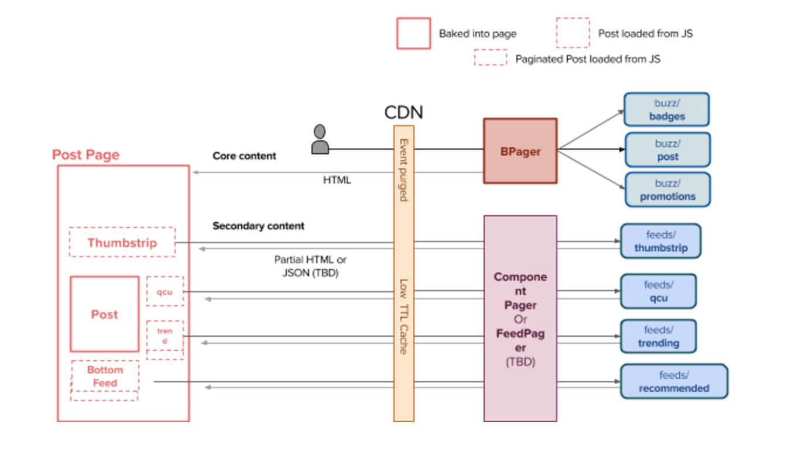

JavaScript
Minus JavaScript
JavaScript
Minus JavaScript
+ Star Wars!
Who's talking?
Sarah Saltrick Meyer
Twitter: @meyerini 💁
BuzzFeed
3 Reasons Star Wars Helps Us Understand Web Development
- Reminds us to use our powers for good.
- Reminds us to use our powers for good.
- Opens up a vast world of magic and adventure.
- Reminds us to use our powers for good.
- Opens up a vast world of magic and adventure.
- Isn't it kind of crazy that we do this instead of working on spaceships?
Does your website work without JavaScript?

There are two kinds of Web out there.
E-commerce has one set of needs.

The "read-only web" has quite another.

Did someone make you reimplement scrolling just to style the scroll bar?
Ignoring accessibility is a sure path to the dark side!
Does that functionality really need to live in a modal?
Does that functionality really need to live in a modal?
And if it does, can you update the URL anyway?
Good routing is your only hope of creating a maintainable website.
The URL must change to reflect what's on the page, or you've dealt a heavy blow to accessibilty -- both for yourself and your users.
The only way to make the thing work is to spin up an entire instance of your JavaScript app and have it execute error-free?
These Robots Tried to Read Your Website, and It Was Really Hard
4 Cool Tips for Isomorphic JavaScript
- Create a mapping between page state and URL.
- Kick off AJAX requests based on user action once page is fully loaded.
- Conditionally render HTML or JSON depending on request headers.
- Don't forget the back button! The History API is a webapp developer's best friend.

We Tried Serverside Rendering, and Couldn't Believe the Speed Gains
Initial page loads were 50% faster without the round trip.
Do you know when you have a JavaScript error?
Do you know when you have a JavaScript error?
Serverside stack traces are a lot more fun.
Why People Won't Shut Up About Serverside Rendering
Why People Won't Shut Up About Serverside Rendering
But what should we render on the server? Everything?

6 Surprising Tips for Saving Yourself from JavaScript
- Try a golden path integration test case that runs withtout JavaScript enabled.
- Infinite scrolling? Keep a "More" link.
- Got a modal? Back it up with a URL. Even better, write it as a standalone page and render that into the modal!
- Forms? Keep their method and action attributes and make sure you'll get a response.
- Never reimplement functionality browsers implement better. Loading a single HTML document with 50 images may be murder on your servers, but your user's devices are optimized for it.
- Maybe your acceptance tests suck because everything is implemented with AJAX?